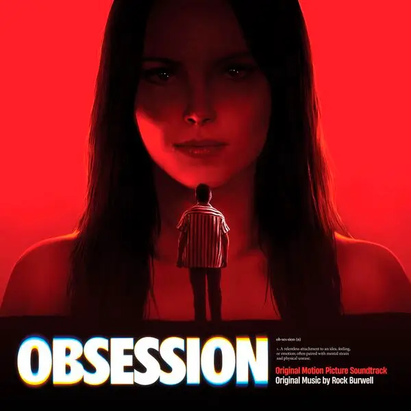
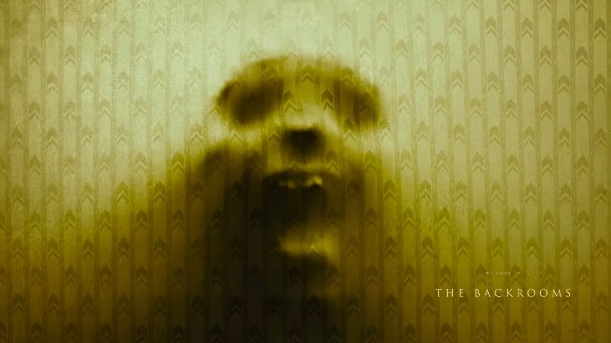
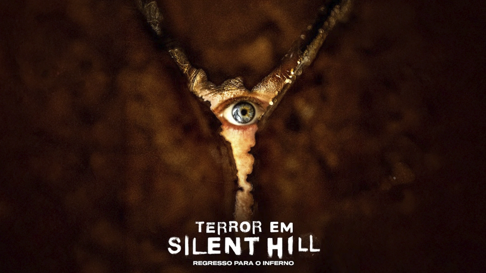
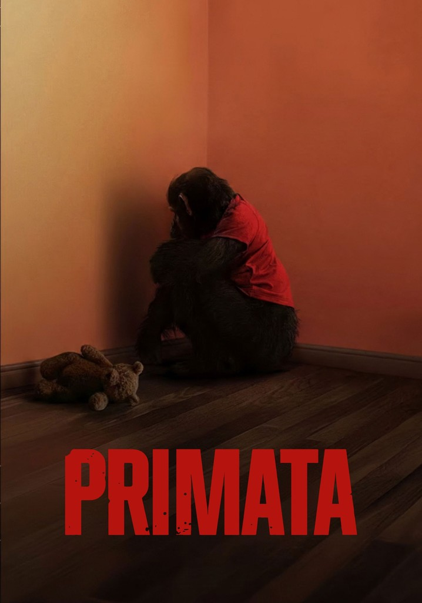

A história acompanha a vida de um homem que desenvolve um forte desejo por uma mulher e tenta fazer com que ela se apaixone por ele.
No entanto, a situação sai completamente do controle quando ela começa a retribuir essa
atenção de uma forma extrema, exibindo um comportamento obsessivo, imprevisível e perturbador.

Backrooms
A história explora o conceito dos "espaços liminares" — locais vazios, familiares, mas profundamente inquietantes,
como corridors infinitos de escritórios com carpetes úmidos e luzes fluorescentes que zumbem sem parar.
A trama acompanha o desespero de pessoas que "caem" fora da realidade
convencional e ficam presas nesse labirinto amarelo interminável, onde o isolamento e a sensação
de estar sendo vigiado testam os limites da sanidade humana.

Pânico 7
Anos após os últimos ataques, Sidney Prescott (Neve Campbell) vive uma vida reclusa e tenta proteger sua família em uma nova cidade.
O cenário muda drasticamente quando um novo Ghostface surge, e o principal alvo dessa vez é Tatum (Isabel May),
a filha adolescente de Sidney.
Para defender sua família, Sidney é forçada a sair do isolamento e
confrontar os traumas de seu passado em uma batalha definitiva contra o assassino mascarado.
Silent Hill
A história é uma adaptação direta do lendário jogo Silent Hill 2. Acompanhamos James Sunderland (Jeremy Irvine),
um homem que está profundamente quebrado emocionalmente após ser separado de seu grande amor, Mary (Hannah Emily Anderson).
Tudo muda quando ele recebe uma carta misteriosa que parece ter sido enviada por ela, chamando-o de volta à cidade de Silent Hill.
Ao chegar lá, James encontra um lugar desolador,
tomado por uma névoa densa e monstros aterrorizantes, forçando-o
a confrontar figuras bizarras e a sua própria perda de sanidade para descobrir a verdade.

O Primata
A história gira em torno de um chimpanzé de estimação que, após contrair uma variação extremamente agressiva do vírus da raiva,
escapa e inicia um ataque brutal. A trama acompanha o desespero
dos sobreviventes presos no mesmo ambiente que o animal, lutando para escapar
enquanto tentam conter uma ameaça ágil, inteligente e completamente imprevisível.

Extermínio: Templo de Ossos
A história se passa décadas após o surto inicial do "Vírus da Raiva" e funciona como uma sequência do filme anterior.
Com a direção de Nia DaCosta (A Lenda de Candyman), a trama deixa um pouco de lado os infectados tradicionais para focar no
colapso moral dos sobreviventes. Acompanhamos o Dr. Kelson, envolvido em pesquisas perigosas sobre o vírus, e o jovem Spike, que acaba
capturado por uma seita brutal e impiedosa liderada por um homem chamado Jimmy Crystal.
O longa mostra que, no fim do mundo, o fanatismo e a crueldade humana conseguem ser mais
assustadores do que os próprios monstros.